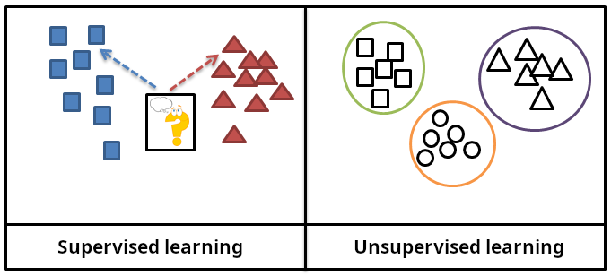

Machine learning
A machine learning program is trained on data instead of being told the answers. The kind of data it gets, and whether the correct answers come with it, decides which of the three groups below a problem belongs to.
Supervised
The data is labelled. Every example already has the right answer attached, and the model learns to give that answer back.
- Spam or not spam
- Predicting a house price
Unsupervised
No answers are given. The model looks for structure by itself, such as groups of similar items or items that do not fit.
- Grouping customers
- Finding strange bank charges
Reinforcement
A program acts in an environment and learns from rewards. Good moves earn points and bad moves lose them.
- Game playing programs
- Robots that walk or grip

How training works
The data is split into a training set and a test set. The model makes predictions on the training set, a loss function measures how wrong they are, and then the model adjusts its numbers to make the error smaller. This repeats thousands of times.
If a model does well on the training data but badly on the test data, it has overfitted. It memorized the examples instead of learning the pattern.